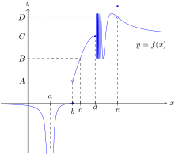

An element \(a\in D\) is an interior point of \(D\) if \(D\) contains an open interval that contains \(a\text{:}\) i.e., \(a\in (c,d)\) and \((c,d)\subseteq D\text{.}\)
Endpoints.
An element \(a\in D\) is a left endpoint of \(D\) if it is not an interior point of \(D\) and \(D\) contains an interval of the form \([a,d)\text{.}\)
An element \(a\in D\) is a right endpoint of \(D\) if it is not an interior point of \(D\) and \(D\) contains an interval of the form \((c,a]\text{.}\) with \(a\in (c,d)\text{.}\)
An element \(a\in D\) is an endpoint of \(D\) if it is either left or right endpoint.
Definition6.2.Continuity.
Let \(f\) be a function with domain \(D\text{,}\) and suppose \(a\in D\) is either an interior point or an endpoint of \(D\text{.}\) The function \(f\) is continuous at \(a\) if the limit of \(f\) at \(a\) exists and is equal to the value of \(f\) at \(a\text{:}\) i.e., if
\(\lim\limits_{x\to a}f(x)\) exists, and
\(\lim\limits_{x\to a}f(x)=f(a)\text{.}\)
The function \(f\) is discontinuous at \(a\) if it is not continuous there.
For a subset \(I\subseteq D\text{,}\) we say \(f\) is continuous on \(I\) if \(f\) is continuous at all interior or endpoint points of \(D\) lying in \(I\text{.}\) We say \(f\) is continuous if it is continuous on its entire domain.
Remark6.3.Continuity at \(a\).
Let \(f\) be a function with domain \(D\text{.}\) Observe that our definition of continuity (and discontinuity) only applies to elements of the domain. (In fact, it only applies to elements of the domain that are either interior points or endpoints.)
For example, consider the function \(f(x)=1/x\) with domain
Since \(0\) is not an element of the domain of \(f\text{,}\) we do not say that \(f\) is continuous or discontinuous at \(0\text{.}\)
Remark6.4.Endpoints.
Let \(f\) be a function with domain \(D\text{,}\) and let \(a\in D\) be a right endpoint of \(D\text{.}\) Since by definition \(D\) contains an interval of the form \((c,a]\) but not a full open interval containing \(a\text{,}\) we are in a situation where only the left limit of \(f\) is defined at \(a\text{.}\) Recall (Definition 5.5) that we define
and thus that \(f\) is continuous at \(0\text{.}\)
Remark6.6.Continuity: graphical.
When scanning the graph of a function \(f\) for points of continuity or discontinuity, we look for “problem points”. These are locations on the graph where either (a) the limit of the function appears not to exist, or (b) where the limit does exist but does not agree with the value of the function.
A well-loved adage in this regard is the phrase “a continuous function is one whose graph can be traced without lifting the pencil”. This is cute, and helpful for guidance, but should not be taken too literally. Indeed, there are some pretty wacky continuous functions out there. For example, the function
is continuous everywhere on its domain, and yet there are some peculiar properties of its graph that make it unclear it what sense it could be “traced by a pencil”.
Example6.7.Continuity: graphical.
For the function \(f\) whose graph is given below, find all points of discontinuity and explain what conditions of Definition 6.2 fail to attain. Make use of some of the following descriptors of discontinuities: “jump”, “removeable”, “oscillating”, “infinite”.

Figure6.8.Graph of function \(f\)
Solution.
Note that we do not speak of \(f\) being continuous or discontinuous at \(a\text{,}\) as this is not an element of the domain of \(f\text{.}\)
The limit of \(f\) at \(b\) does not exist, since the left limit does not equal the right limit (5.6). Thus (i) of Definition 6.2 fails, and \(f\) is not continuous at \(b\text{.}\) Such a discontinuity is called a jump discontinuity, as the difference between the left- and right-hand limit values is manifested graphically as a discrete jump in the height of the graph of \(f\text{.}\)
The limit of \(f\) at \(c\) exists, and is equal to the value of \(f\) at \(c\text{:}\) that is, we have
Thus (i) and (ii) of Definition 6.2 are satisfied, and \(f\) is continuous at \(c\text{.}\)
The limit of \(f\) at \(d\) does not exist, since the right-hand limit does not exist. Thus (i) of Definition 6.2 fails, and \(f\) is not continuous at \(d\text{.}\) Such a discontinuity is called an oscillating discontinuity, as the wild oscillation is the reason why the limit does not exist.
The limit of \(f\) exists at \(e\text{,}\) but is not equal to the value of \(f\) at \(e\text{.}\) In more detail, we have
Thus \(f\) is not continuous at \(e\text{.}\) Such a discontinuity is called a removeable discontinuity as a simple redefining of \(f\) at \(e\) (i.e., setting \(f(e)=D\)) would make the discontinuity disappear.
Example6.9.Continuous everywhere.
Let \(\displaystyle f(x)=\frac{x}{\sqrt{x^2-1}}\text{.}\) Prove, using Definition 6.2 that \(f\) is continuous.
Solution.
Let \(a\) be any interior element in the implied domain of \(f\text{.}\) By definition of this domain, this means \(a^2-1> 0\text{.}\) It follows that
This computation shows both that (i) \(\lim\limits_{x\to a}f(x)\) exists, and (ii) \(\lim\limits_{x\to a}f(x)=f(a)\text{,}\) and thus by Definition 6.2, that \(f\) is continuous at \(a\text{.}\) Since \(a\) was an arbitrary element of the domain of \(f\text{,}\) we conclude that \(f\) is continuous at all points of its domain, and hence continuous.
Next we state some theorems that allow facilitate our (non-graphical) analysis of continuity for a given function. A first result provides us with a large zoo of continuous functions.
Theorem6.10.Continuous functions.
Absolute value.
The function \(f(x)=\abs{x}\) is continuous everywhere on its domain. In other words, the absolute value function is a continuous function.
Polynomials and rational functions.
If \(f\) is either a polynomial or a rational function, then \(f\) is continuous everywhere on its domain. In other words, polynomials and rational functions are continuous functions.
Trigonometric functions.
The functions \(f(x)=\sin x\text{,}\)\(g(x)=\cos x\text{,}\) and \(h(x)=\tan x\) are continuous everywhere on their domains. In other words, \(\sin\text{,}\)\(\cos\text{,}\) and \(\tan\) are continuous functions.
This result actually requires some work, since currently we only have an evaluation limit formula for sine at \(0\text{.}\) This gives us a chance to illustrate the affine substitution technique again. (See Remark 5.10.) Take any \(a\in \R\text{.}\) We have
The computation shows both that (i) the limit of \(\sin\) exists at \(a\text{,}\) and (ii) the limit agrees with the value of \(\sin\) at \(a\text{.}\) We conclude that \(\sin\) is continuous at \(a\text{.}\) Since \(a\) was arbitrary, we conclude that \(f\) is continuous everywhere, hence continuous.
Theorem6.11.Continuity rules.
Assume \(f\) and \(g\) are both continuous at the point \(a\text{.}\)
Linear combination.
For all constants \(c,d\in \R\text{,}\) the function \(h(x)=cf(x)+g(x)\) is continuous at \(a\text{.}\)
Product.
The function \(h(x)=f(x)g(x)\) is continuous at \(a\text{.}\)
Quotient.
Assume further that \(g(a)\ne 0\text{.}\) The function \(h(x)=f(x)/g(x)\) is continuous at \(a\text{.}\)
Power.
Let \(n\) be a positive integer. The function \(h(x)=[f(x)]^n\) is continuous at \(a\text{.}\)
Root rule.
Let \(n\) be a positive integer. If \(n\) is even, assume further that \(f(a)\geq 0\text{.}\) The function \(h(x)=\sqrt[n]{f(x)}\) is continuous at \(a\text{.}\)
Theorem6.12.Continuity composition rule.
Assume \(f\) and \(g\) are functions, and suppose the range of \(g\) is a subset of the domain of \(f\text{.}\) If \(\lim\limits_{x\to a}g(x)=b\text{,}\) and if \(f\) is continuous at \(b\text{,}\) then \(\lim\limits_{x\to a}f(g(x))=f(b)\text{.}\)
It follows that if \(g\) is continuous at \(a\text{,}\) then the composition \(f\circ g\) is continuous at \(a\text{.}\)
Example6.13.Continuity rules.
Prove, using our various continuity rules, that the function
Let \(a\) be an interior element of the domain of \(f\text{.}\) Recall that by definition \(a\) is in the domain of \(f\) if and only if we can evaluate the defining formula of \(f\) at \(a\text{.}\) Thus we have \(\cos a> 0\text{.}\)
Now, let \(g(x)=\sin^3 x=(\sin x)^3\text{,}\) and let \(h(x)=\sqrt{\cos x}\text{.}\) Since \(\sin\) is continuous everywhere, the power rule for continuity implies \(g(x)=\sin^3(x)\) is continuous at \(a\text{.}\) Since \(\cos\) is continuous at \(a\) and \(\cos a> 0\text{,}\) it follows from the root rule for continuity that \(h(x)=\sqrt{\cos(x)}\) is continuous at \(a\text{.}\) Since furthermore \(h(a)\ne 0\text{,}\) the quotient rule for continuity implies \(g(x)/h(x)\) is continuous at \(a\text{.}\)
Next, another application of the root rule for continuity implies \(\sqrt[5]{g(x)/h(x)}\) is continuous at \(a\text{.}\) Lastly, since the absolute value function \(p(x)=\abs{x}\) is continuous and \(q(x)=\sqrt[5]{g(x)/h(x)}\) is continuous at \(a\text{,}\) we conclude from Theorem 6.12 that